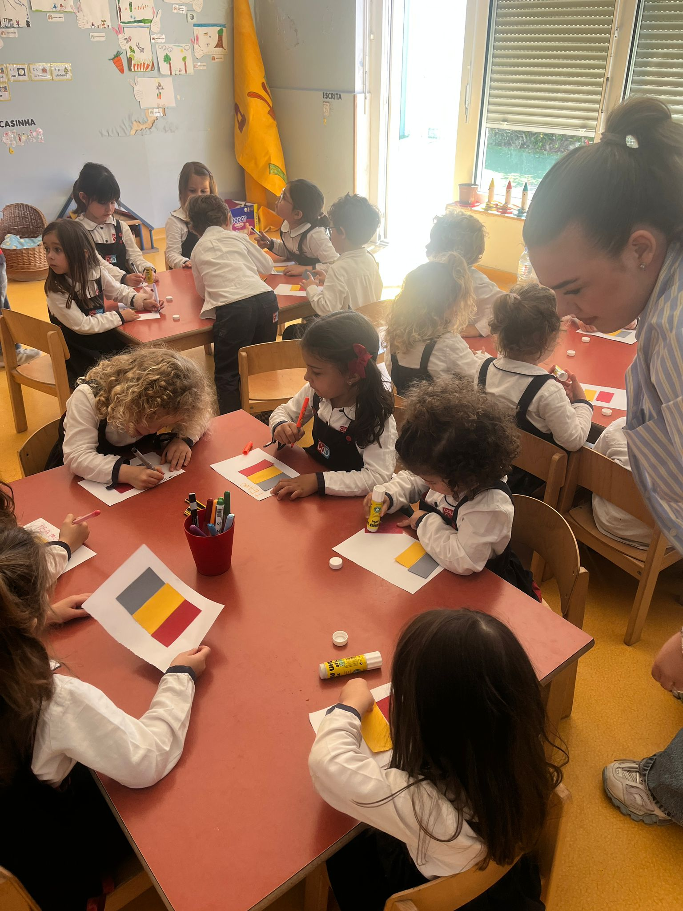
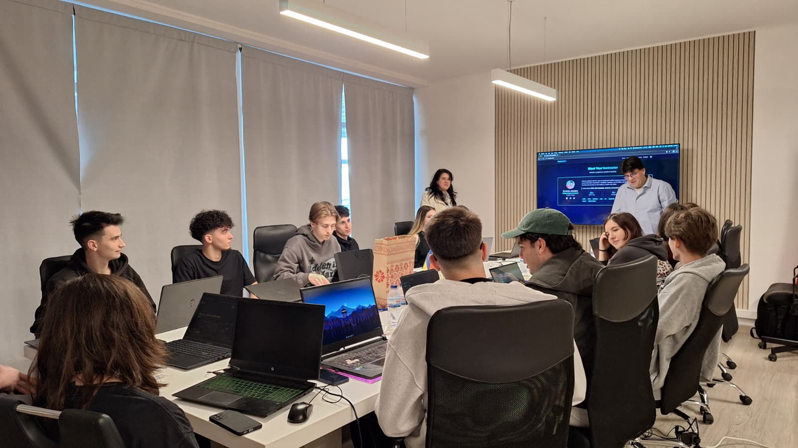
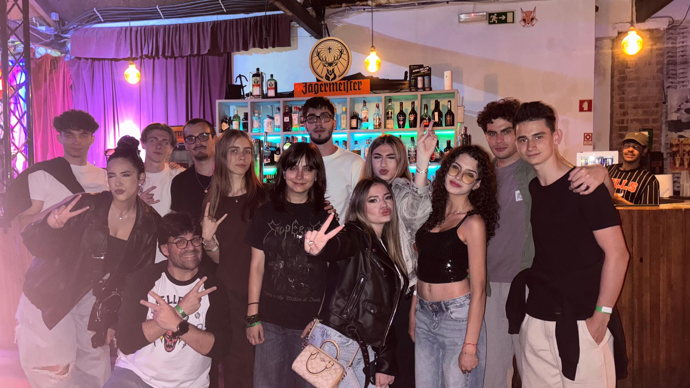
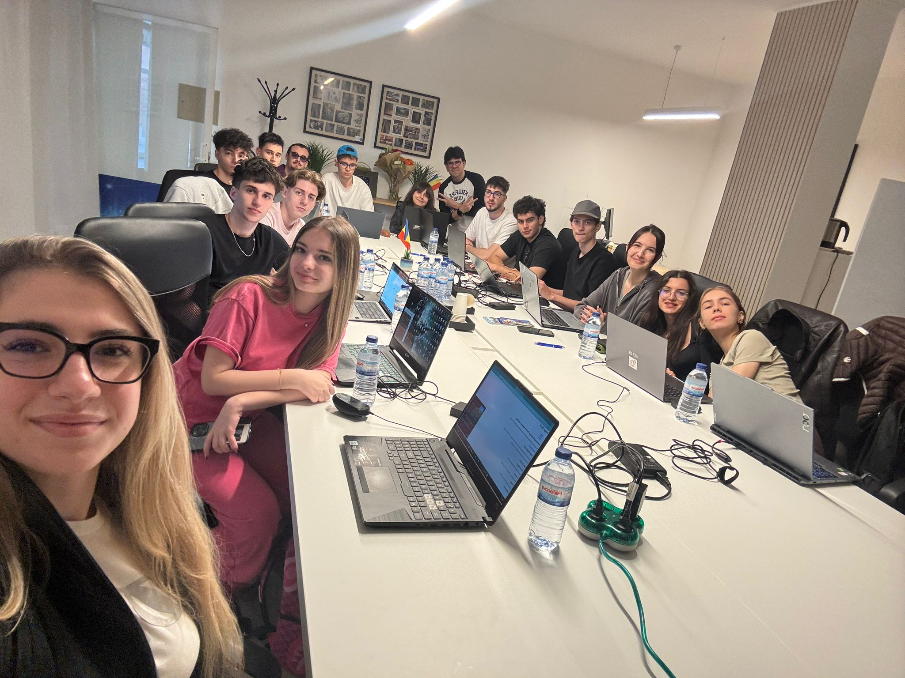

Colegiul Național de Informatică „Matei Basarab”
Despre Noi
Colegiul Național de Informatică „Matei Basarab” din Râmnicu Vâlcea este o emblemă a excelenței în educație din sudul României, un spațiu în care tradiția academică întâlnește tehnologia de vârf.
Ne dedicăm formării tinerilor pasionați de științe, tehnologie și inovație, oferindu-le nu doar pregătire curriculară de înaltă performanță, ci și mediul ideal pentru dezvoltarea gândirii critice, a creativității și a spiritului de echipă.
Despre Proiectul Erasmus+
Prin implicarea noastră în programul Erasmus+, ne propunem să depășim granițele tradiționale ale sălii de clasă și să deschidem noi orizonturi pentru elevii noștri. Proiectele noastre europene sunt concepute pentru a:
- Conecta tinerii la standardele educaționale și profesionale internaționale.
- Dezvolta competențe cheie, de la aptitudini digitale avansate și lucru în echipă multiculturală, până la adaptabilitate și cetățenie europeană activă.
- Facilita schimbul de bune practici, oferind participanților oportunitatea de a experimenta contexte de învățare diverse în spațiul european.
Prin această inițiativă Erasmus+, transformăm oportunitățile internaționale în experiențe de viață memorabile, pregătind generația de mâine să inoveze, să colaboreze și să exceleze pe piața globală a muncii.
Proiecte de Acreditare VET
Astfel sunt dobandite abilitati precum:

Empatie
Importanta acestei calitati este subestimata in lumea moderna, dar noi vrem sa o cultivam in sangele noilor generatii.

Colaborare
Invatam sa colaboram in scopul atingerii potentialului maxim, depasind impreuna obstacolele aparute.

Prietenie
Plimbarile pe faleza, centrul turistic, cladirile si oamenii, toate au alcatuit o experienta incredibila alaturi de prieteni.

Invatare
O experienta plina de aventuri, dar si de activitati de invatare alaturi de prieteni.